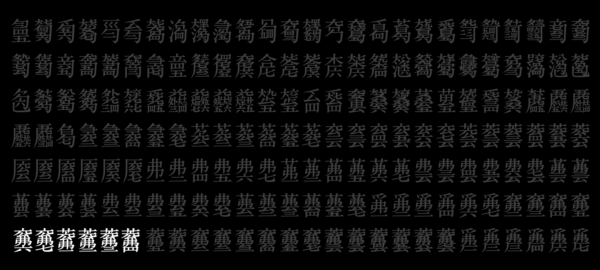

CY Type｜虫鱼爬字
Previous
Next

Project
Computer digital font development of Jianzi notation system for Guqin
Scripts
Jianzi (large character)
Jianzi (small character)
Client
Culture and Art Publishing House
Designers
Zhao LIU, Kui ZHU, Yiwei CHEN, Yue CHEN, Jingjing DUN, Xicheng YANG, Peilin SONG
Period
September 2020 to October 2024
Previous: Shanghai Sky
Next: Youran Lihei